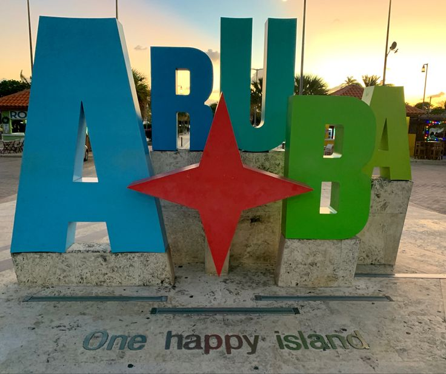
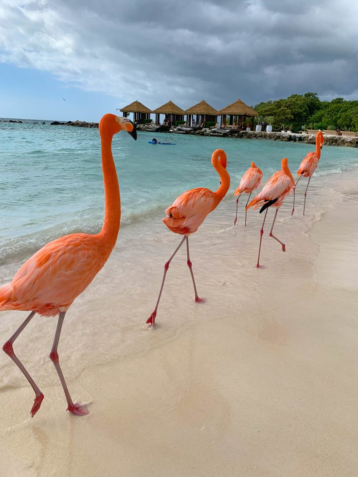
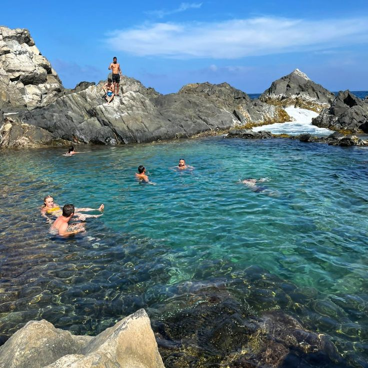
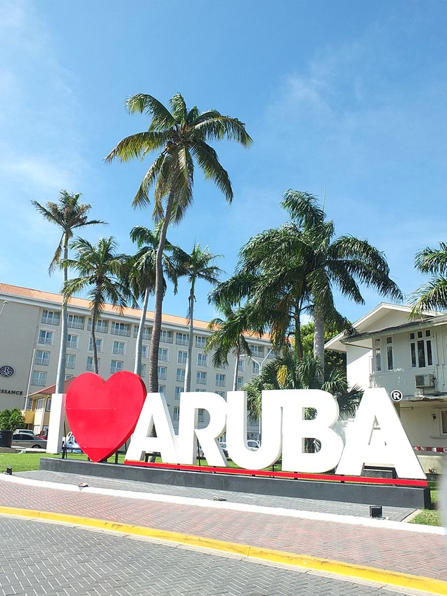
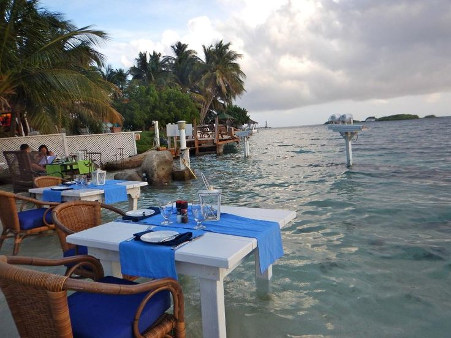

4-Day Itinerary
Aruba is famous for its white sandy beaches, crystal-clear waters, and friendly atmosphere. Here’s a 4-day itinerary to help you make the most of your trip:
- Day 1: Relax on Eagle Beach, snorkel at Malmok Beach, sunset dinner at Passions on the Beach. 
- Day 2: Explore Arikok National Park, swim at the Natural Pool, visit Ayo and Casibari Rock Formations. 
- Day 3: Visit Oranjestad for shopping, lunch at Zeerover, evening at Palm Beach with live music. 
- Day 4: Take a catamaran cruise, beach day at Baby Beach, final dinner at The Flying Fishbone. 
Travel Tips
- Best time to visit: April to August (dry season)
- Currency: Aruban Florin (AWG), US dollars widely accepted
- Language: Dutch, Papiamento (English and Spanish commonly spoken)
- Must-try foods: Keshi Yena, Pastechi, fresh seafood